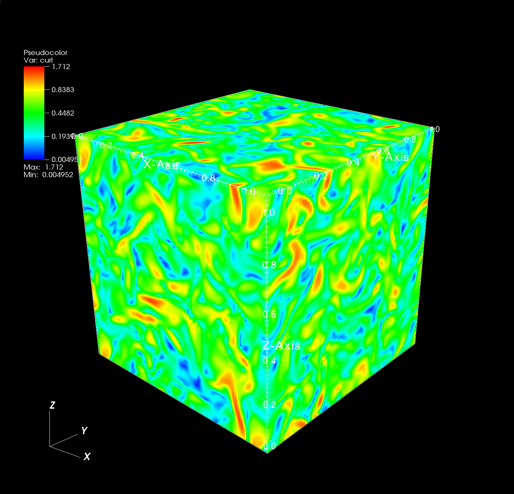

Vorticity field
| Vorticity field in 2D slide view at t = 10s | Magnitute of vorticity field in 3D view at t = 10s |
|  |
Komogolov 5/3 power law
| The following figures verify the 3d energy spectrum both in Fourier space we use polyfit function to verify the komogolov 5/3 power law in inertial subrange. |
The turbulence kinetic energy is plotted with respect to time Energy is decaying to steady state very fast and the mean buoyancy is removed at the end of every time step |